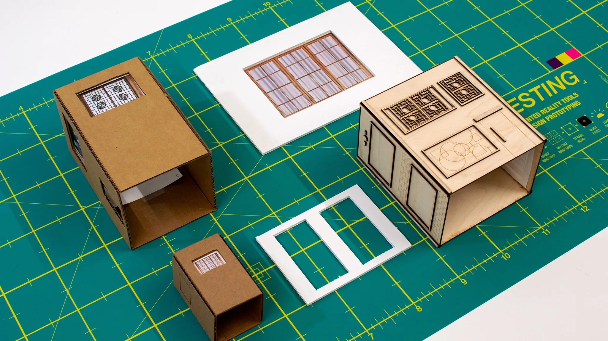
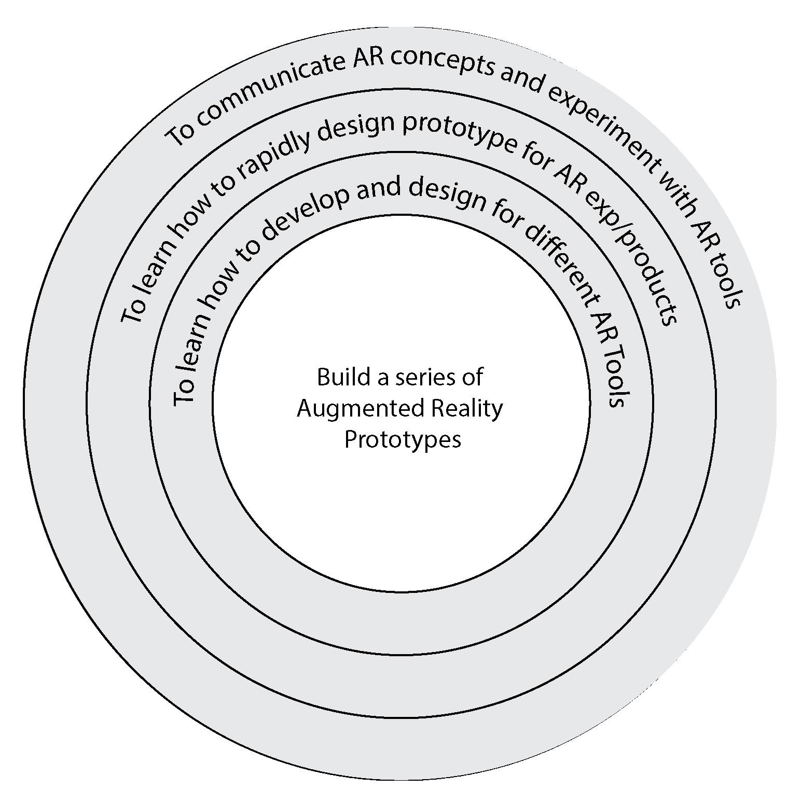
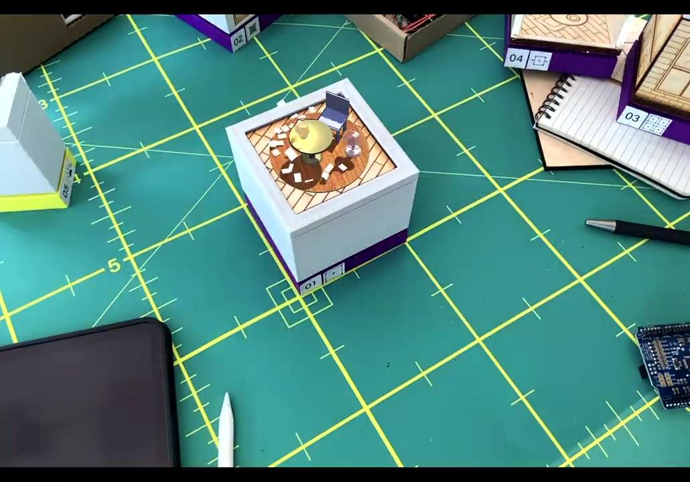

Physicalization of AR/XR Experiences
Physical prototyping tools for augmented reality

Project overview
For my Bachelor of Design capstone, I investigated how physical materials and forms affect augmented reality. My first experience prototype exposed tracking, lighting, and alignment problems.
I shifted from designing one complete experience to testing the mechanics it depended on.
I designed and fabricated six tools, connecting physical objects and sensors to digital behaviors in Unity.
The toolkit
The toolkit contains six prototypes for exploring image tracking, occlusion, visual effects, and physical input.

The set combines fabricated forms, image targets, and sensor-driven interactions.
Prototype demonstrations
The demonstrations show the behavior each tool was built to investigate.
Single Image Mapping
Compares image tracking across surface finishes and printed patterns. Matte targets tracked more consistently than reflective or low-contrast surfaces in these tests.
3D Masking
Uses a physical form to hide and reveal virtual content. Small mismatches between the object and its model disrupted the alignment.
Multiple Image Mapping
Explores multiple targets within one camera view. Target spacing, size, and angle affected the continuity of the virtual content.
Processing Effects: Glass
Applies a glass-like shader to the live camera feed, altering the appearance of the scene without changing the physical form.
Reactive Lighting: Light Sensor
Connects a light sensor to a virtual lamp, allowing changes in ambient light to control a digital response.
Physical Control: Potentiometer
Maps a physical dial to the speed of a virtual fan, providing continuous control of the digital response.
Material and environmental constraints
The prototypes depended on several physical conditions: sufficient target contrast, alignment between objects and models, and lighting that supported tracking.
Static designs did not reveal how those conditions would affect the experience through a camera.
During testing, reflective surfaces lost tracking, misaligned geometry disrupted masking, and lighting changes affected consistency between sessions.
I needed a way to examine these constraints before building a complete experience.
Design constraints
Surface quality and contrast determine stability.
Geometry must align precisely with digital models.
Lighting conditions affect consistency.
Project direction
The initial concept was a narrative AR experience built around physical objects. Its first prototype showed that tracking and alignment needed further investigation before I could develop the experience.
I separated those mechanics into individual tools so I could vary their physical conditions and observe the results.
Design a full AR experience.
Core issues came from system behavior.
Build tools to test individual mechanics.
The early concept, physical forms, and masking setup below document that change in direction.



Prototype architecture
I organized the toolkit around individual behaviors. This let me compare materials, forms, and inputs without rebuilding the complete experience for each test.
Tracking across surface types.
Occlusion using geometry.
Multi-marker stability.
Camera-based effects.
Environmental input.
Analog control mapping.
System diagrams
The diagrams show each tool’s physical construction and its connection to the digital behavior.


Using the toolkit
The toolkit gave me a way to examine tracking, masking, and physical input while developing the design.
I could compare surface finishes and physical alignment through the camera, then use those observations to revise the forms.
Fabrication and iteration
I iterated on tools that lost tracking or depended too heavily on a precise setup.
I adjusted surface treatments, marker density, and physical dimensions, then compared the behavior of the revised prototypes.
Form studies
Exploring how geometry affects occlusion and tracking stability.
Geometry and modularity


Material tests
Comparing surface finishes to understand their impact on tracking reliability.
Surface and tracking reliability


Assembly
Integrating physical components, image targets, and electronics into working tools.
Building the tools




In use
Testing how the system behaves across different environments and lighting conditions.
AR captures and tests


Findings
Tracking reliability varied with surface finish and contrast in the materials I tested.
Small geometry mismatches disrupted masking, while changes in lighting affected consistency across sessions.
Separating the behaviors helped me identify which physical conditions each mechanic relied on.
Outcome
I completed six working research prototypes and documented their construction and behavior. The toolkit provides a basis for further testing across materials and environments.
The project established a method I use when exploring unfamiliar systems: test the underlying constraints, then develop the experience around what the prototypes demonstrate.
Want the full walkthrough? Get in touch →